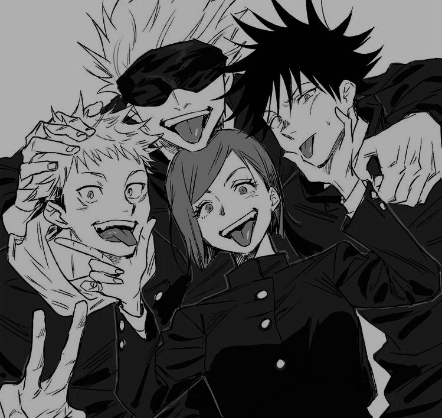

Jujutsu Kaisen é uma obra que conquistou muitos fãs por misturar ação, fantasia e batalhas sobrenaturais. Criado por Gege Akutami, o anime acompanha Yuji Itadori, um estudante que entra no perigoso mundo das maldições após se envolver com o poderoso Ryomen Sukuna.
A história apresenta feiticeiros jujutsu que lutam contra criaturas formadas por emoções negativas humanas. Entre eles, destaca-se Satoru Gojo, um dos personagens mais populares da série. Além das lutas intensas, o anime chama atenção pelos personagens carismáticos, pela emoção da história e pela animação de alta qualidade produzida pelo estúdio.
